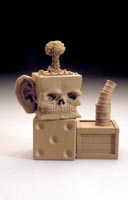
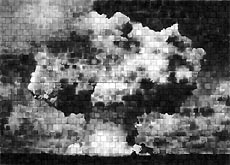
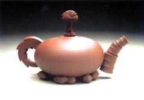
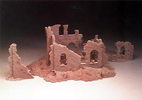

| Richard
Notkin
American ceramist.

American
ceramist Richard Notkin studied under Ken
Ferguson at the Kansas City Art Institute, earning a BFA
in 1970 and under Robert
Arneson at the University of California, where he earned
an MFA in 1973. He is well known for his socio-critical tile mural
‘The Gift’ and his sculptural re-interpretations of
the Yixing teapot, e.g. his ‘Curbside Teapot’ of 1986.
Notkin is on the board of the Archie Bray
Foundation. He has won several awards, including National
Endowment for the Arts Visual Arts Fellowships in 1981 and 1988,
the Louis Comfort Tiffany Foundation Award in 1991 and a Jerry Metcalf
Foundation Artist Fellowship in 1999.
Artist's Statement
As the poet economizes words, I have developed a similar means of
expression in the ceramic arts through the conservation of materials.
I believe that the aesthetic impact of a work of art is not proportional
to its size, but to its content. It is not the objects created which
are of prime importance, but the lives of people who may be touched
in significant ways.
Although the vast majority of my work created between 1983 and
1995 consists almost entirely of teapots, I consider myself a sculptor
with a strong commitment to social commentary. My chosen medium
— the material I love to work with — is clay. The vessel
is the primal "canvas" for the ceramic artist, and my
vessel of choice is the teapot, the most complex of vessels, consisting
of body, handle, spout, lid and knob. This allows me the widest
latitude in juxtaposing the many images I use to set up my narrative
pieces.

In addition, the teapot is a universally recognized object, with
strong associations to domesticity and tranquility. As such, it
is a "hook" to lure the viewer — who must then decipher
the narrative imagery — in a sort of bait-and-switch fashion.
The conveying of tea is secondary to the not-so-hidden message in
my "teapots". In addition to examining our many human
follies, these teapots pay homage to the teapots of Yixing, China.
I was first attracted to the Yixing teapots' small scale, attention
to detail, and wide range of imagery; I later became a student of
their remarkable sense of proportion and composition, as well as
their symbolism and narrative qualities. In creating my teapots,
I strive to avoid being a mere copyist. Although I closely imitate
the scale, formats, colors and textures of the unglazed Yixing teapots,
my intention is to borrow from these formal qualities with honesty
and a sense of homage. It is of utmost importance, however, that
my teapots retain a totally separate cultural identity, that they
reflect our contemporary civilization's imagery and speak of our
current situations as we emerge from the 20th century into the 21st.
The pieces in the "Heart Teapot" series explore the origins
of conflict in human culture — both the collective conflicts
between various nations, ethnic groups, religions, etc., and those
inherent in relationships between individuals. The seeds of all
conflict are to be found in each human heart. Such pieces as "Heart
Teapot: Hiroshima", "Heart Teapot: Beirut", and "Heart
Teapot: Salvador" were created to commemorate specific instances
of the human species' dark side, but the message of each piece is
intended to outlive its respective moment in history. The spirit
and power of art are exemplified by a work of art's ability to transcend
time and cultural boundaries.
20th Century Solutions
My
most recent works in the 20th Century Solutions Teapot series
were conceived in late 2000.I began the design drawings, prototype
models and mold fabrication early in 2001. Although the first work
was nearing completion, the tragic events of September 11 paralyzed
my creative spirit for some time. I decided to halt work on this
series, as the imagery seemed too painful. After a few days, and
with the encouragement of Phoebe Toland, my wife, I decided that
the message of the piece was perhaps more pertinent now than ever,
and that it certainly needed to be seen.
The titles, such as It Will Be the Same, And It Can't
Be Helped, Nobody Knows Why, and With or Without Reason,
are titles of individual etchings from the Disasters of War
series by the great Francisco Goya. My pieces are meant to be a
contemporary reinterpretation of these themes, and to pay homage
to Goya's work.
The concept behind the 20th Century Solutions Teapot series
is, quite simply, that the armed conflict solutions of the 20th
Century are no longer viable. We have entered the 21st Century with
the technologies of 'Star Wars' and the emotional maturity of cavemen,
a very dangerous combination. The problems of human civilization
are far too complex to be solved by means of explosive devices.
More Artists of the Week
More Articles
|
{kind=link}
{kind=link}
{kind=link}
{kind=link}